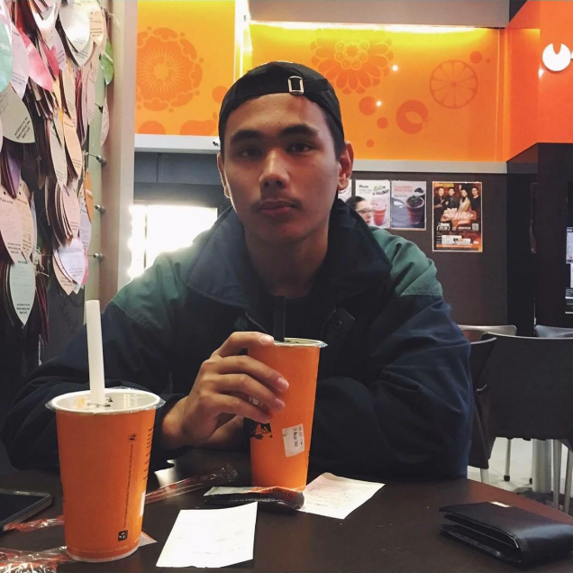

My home is Perth, Western Australia.
I am 19 years old and from Perth, Western Australia. I just learned about coding this year and am completely fascinated by it and want to learn as much as I can with ambitions to land a professional job one day.
My father is from the Phillipines and my mother is born in Australia but her parents are both from the Netherlands. So while I claim to be Australian I also have Filipino and Dutch heritage.
I love music and sports. I am a huge fan of rap and RnB, from old school all the way through to modern day artists. My favourite sports are basketball, bodybuilding and football (soccer).
I want to master the process of building web sites and apps and increase my knowledge, skills and abilities in:
I want to develop my skillset until I can apply as a Junior Front End Developer. I want to learn iOS development and build apps as a hobby. I also want to learn about the backend side of development and if I like it then look at becoming a full stack developer.